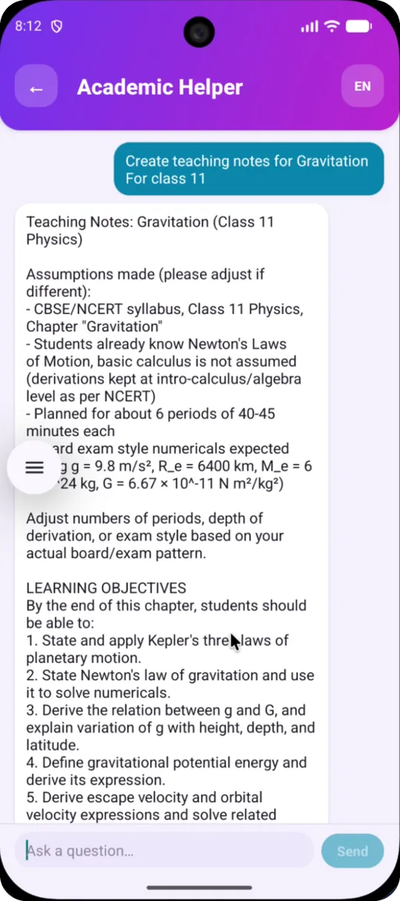
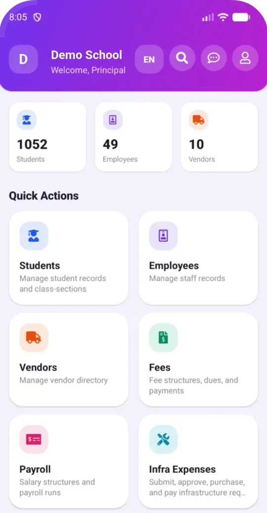

AI
An AI helper for every teacher, inside the school app
No separate tool to learn and no extra login. The AI tools sit in the same Smart Gurukul app teachers already use for attendance and marks.
In short: Smart Gurukul has three AI tools in the app:
- an AI helpdesk assistant. Students ask it about their own attendance, fees, subjects and timetable, staff about their own attendance and timetable, and admins also about school-wide figures.
- Academic Helper, which explains topics. For students it teaches the method rather than handing over answers.
- a question paper generator for teachers.
They are part of the app, not a separate paid add-on.

For teachers
What can teachers do with the AI?
A teacher types what they need, such as “teaching notes for Gravitation, Class 11”, and the AI helper drafts it right there.
- Teaching notes for a chapter or topic.
- Explanations of a concept, pitched at the class level.
- Question papers: draft a quiz or test for your class, check it and share it as a PDF.
- A starting point, not a final answer: teachers review and adjust before using anything in class.

For the office and students
What can the office and students ask?
The AI helpdesk assistant is one tap away on the principal’s dashboard and in the student app.
- Principals and admins: ask about the school’s records in plain words, such as fee dues or attendance.
- Cover an absent teacher: the helpdesk finds free teachers and proposes the changes; the admin confirms.
- Students: ask the helpdesk about their own attendance, fees and timetable, and ask Academic Helper to explain a topic they’re studying.
- Everyone: it opens like a chat, so there’s nothing new to learn.
Built with care
How the AI treats your school’s data
No free-form database access
The assistant can’t write its own database queries. It can only use a fixed set of checked lookups.
School figures for admins only
Questions about school-wide records, like fee dues and payroll, are answered only for admin accounts.
Your school only
Every lookup is locked to the school you are signed in to.
Academic Helper teaches the method
For students, Academic Helper explains the method step by step instead of giving away answers. The server decides this from the user’s role, not the phone.
FAQ
AI in school: common questions
What does the AI in Smart Gurukul do?
Smart Gurukul has three AI tools in the app: an AI helpdesk assistant that answers questions about your own attendance, fees and timetable (and, for admins, school-wide figures); Academic Helper, which explains topics; and a question paper generator that drafts quizzes and tests for teachers.
Is the AI a separate paid add-on?
No. The AI tools are part of the Smart Gurukul app.
Can the AI see other schools’ data?
No. Every lookup is locked to the school you are signed in to, and the assistant can only use a fixed set of checked lookups rather than writing its own database queries.
Does the AI just give students the answers?
No. For students, Academic Helper explains the method step by step instead of giving away answers, while teachers get full answers. The server decides this from the user’s role, not the phone.
Should teachers use AI-written notes as they are?
No. Treat them as a first draft. Teachers should always review and adjust AI-written material before using it in class.
Can the AI make quizzes?
Yes. Teachers draft quizzes, tests and question papers with AI for their class and subject, check them, share them as a PDF with or without the answer key, and add the multiple-choice questions to the question bank for Battle Rooms and the Arena.
Explore more
Try it free for a month
We import your register and train your staff. You decide after a month of real use.